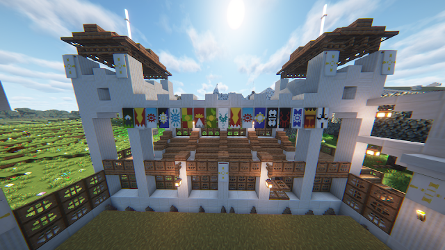

Escolha sua edição
Java para computador tradicional. Bedrock para celular, tablet e Windows.
Comece aqui
Siga as etapas abaixo para acessar o servidor pelo computador, celular ou Windows.
Java para computador tradicional. Bedrock para celular, tablet e Windows.
Use um dos botões de cópia e não inclua https:// no campo do servidor.
No menu multijogador, crie uma nova entrada com o endereço e a porta indicados.
Explore o mundo, conheça as raças e procure um representante de reino.
Java Edition
enx-soc-15.enx.host:10070Bedrock Edition
enx-soc-15.enx.host · porta 10070Status e regras básicas
